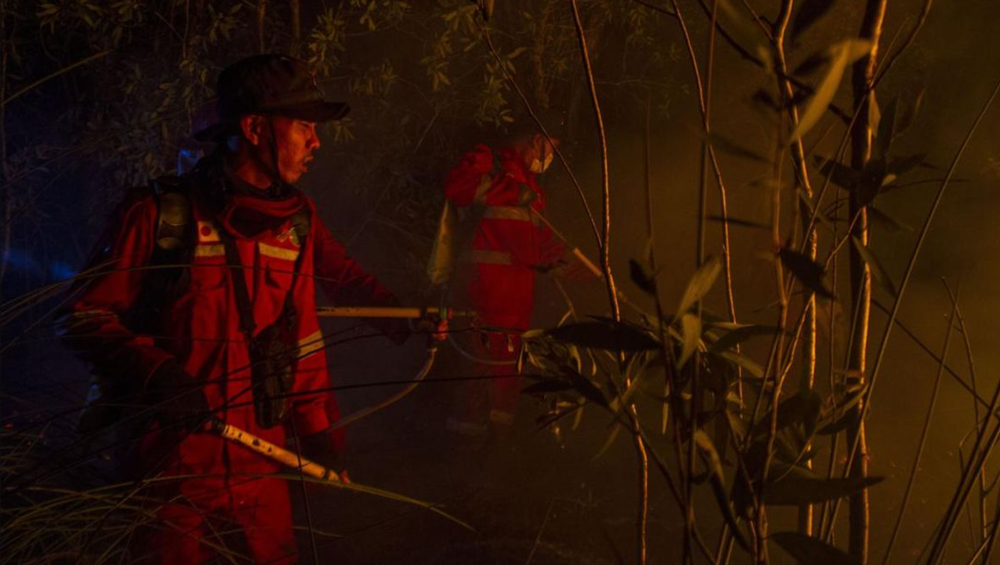
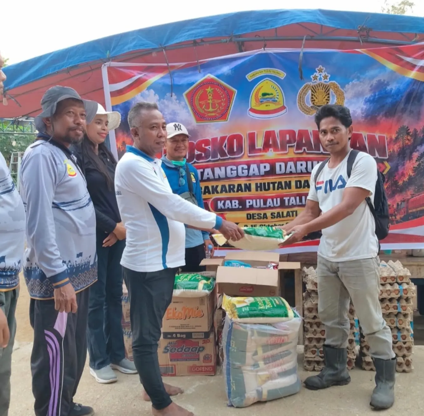

// Karhutla · Transparansi
Fire
Watch
Setiap rupiah penanganan kebakaran hutan bisa kamu periksa. Lihat ke mana uang mengalir, buka bukti kerja di lapangan, dan laporkan jika ada dugaan penyelewengan anggaran.
The Main Issues

Karhutla: ancaman nyata bagi lingkungan, ekonomi, dan kehidupan.
Karhutla (kebakaran hutan dan lahan) adalah peristiwa terbakarnya hutan dan/atau lahan, termasuk lahan gambut, yang menyebabkan kerusakan lingkungan, kerugian ekonomi, serta gangguan kehidupan masyarakat.
Di Indonesia, karhutla sebagian besar dipicu oleh aktivitas manusia, seperti pembukaan lahan dengan cara membakar, dan diperparah oleh musim kemarau panjang, El Niño, serta kondisi gambut yang kering.
Peringatan Dini
Titik panas satelit (MODIS & VIIRS) per zona rawan, dengan jarak ke lokasi kamu.
Peringatan Terkirim
Buku Kas Publik Digital
Detail Transaksi
Rincian Uang Masuk
Rincian Uang Keluar
Penyerapan Anggaran Karhutla
Realisasi per pos kegiatan (triliun rupiah)
Dokumentasi Lapangan & Ekologi


Ruang Partisipasi Rakyat
Lapor Titik Api & Korupsi Anggaran
Laporan Warga
Memuat…Memuat laporan…